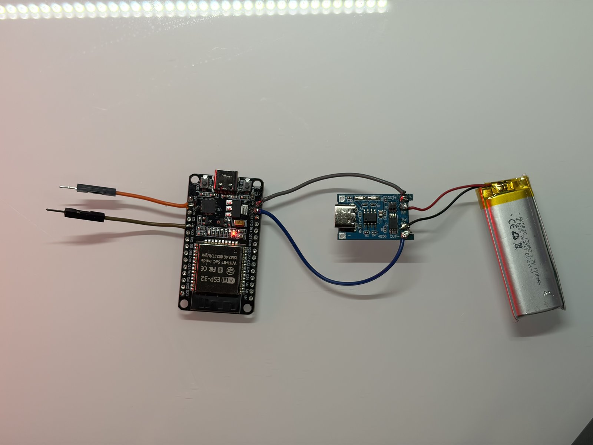
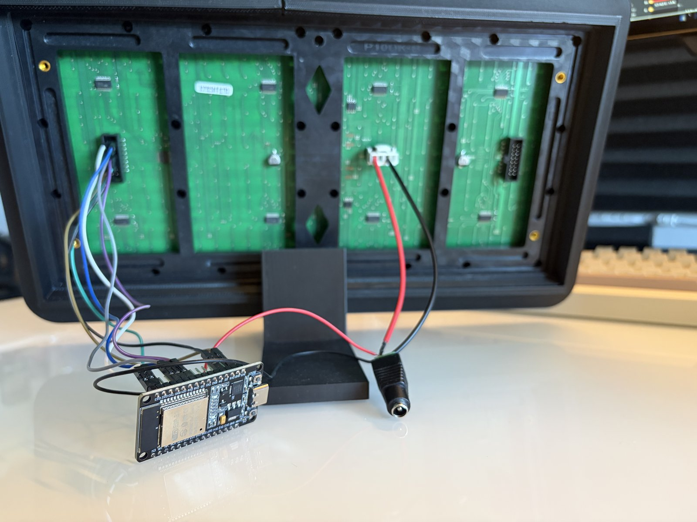
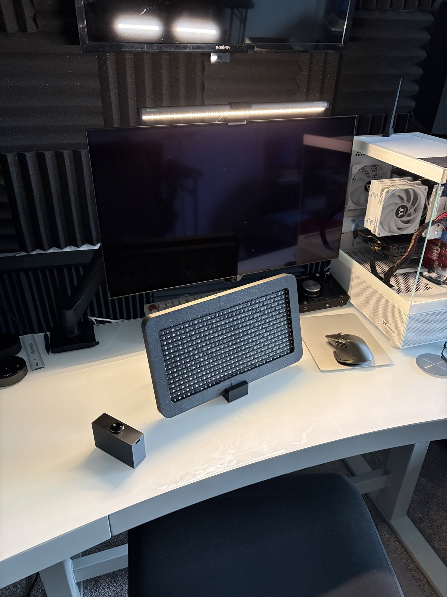
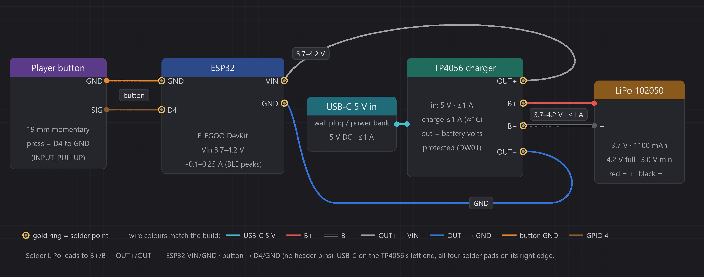
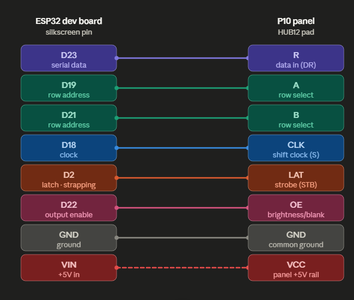
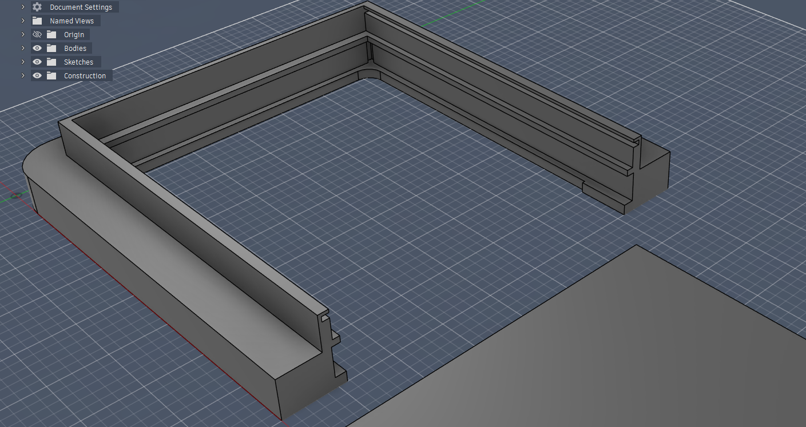

ESP32 LED scoreboard
A battery-powered table tennis scoreboard. An ESP32 drives P10 LED matrix panels and takes score input over Bluetooth Low Energy from custom button controls.
- Designed the power system around a LiPo cell with TP4056 charging, and wired the ESP32 to the panel's HUB12 interface.
- Modeled the enclosure, panel rails and stand as parametric Fusion 360 Python scripts, and the button case in CadQuery, so a dimension change regenerates the part.
- 3D printed all parts.
Build photos and diagrams 6





